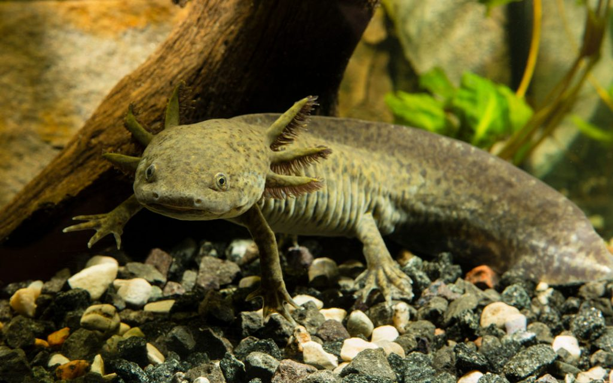
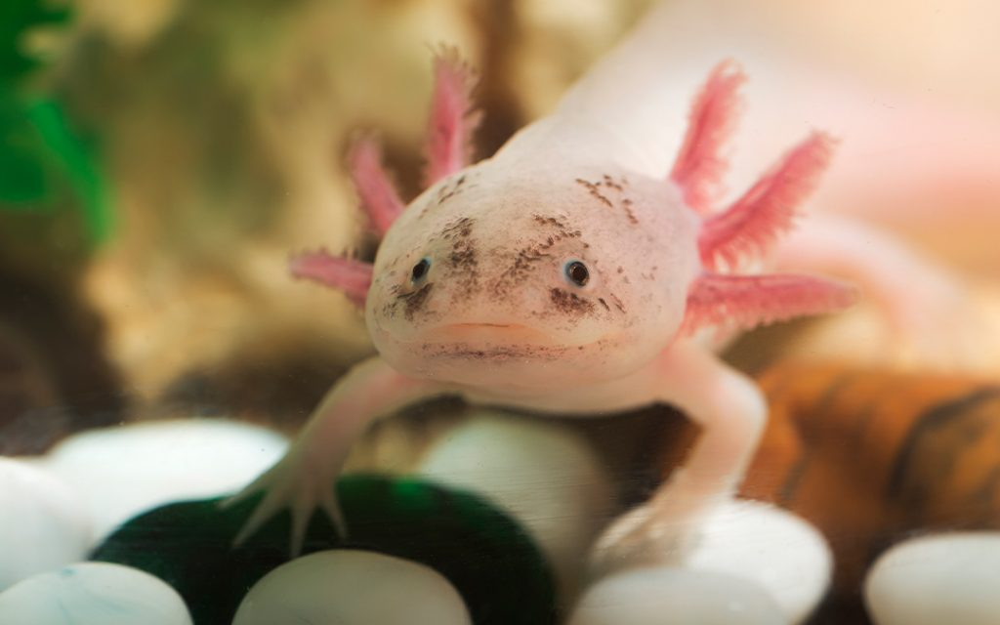
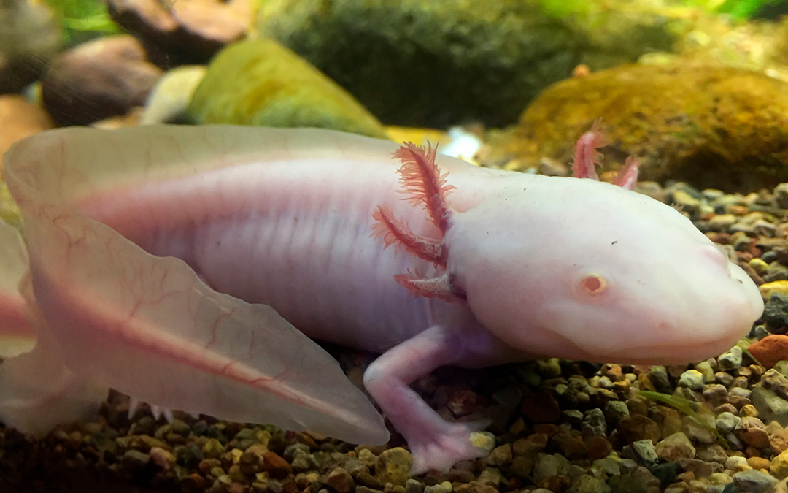
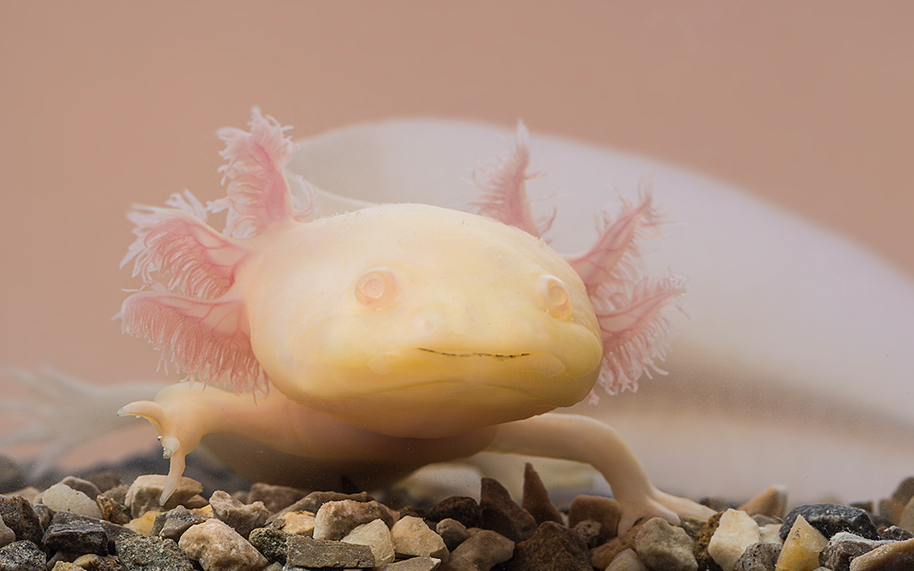

El axolote mexicano o ajolote, Ambystoma mexicanum, es una salamandra con la característica poco habitual de conservar sus rasgos larvales en su vida adulta. Esta condición, que se conoce como neotenia, significa que conserva su aleta dorsal de renacuajo -que recorre casi la totalidad de su cuerpo- y sus branquias externas, que sobresalen de la parte trasera de su ancha cabeza en forma de plumas.
Tenemos que remontarnos hasta los aztecas para encontrar los primeros registros de la historia del axolote, que se documentó en varios códices. En la literatura científica apareció en 1615 en un libro de historia natural, no fue hasta doscientos años cuando recibió un nombre científico.
Desde entonces, esta especie ha estado muy presente en la cultura mexicana, ya que se ha utilizado como alimento y en usos medicinales sin fundamento científico. Debido a su popularidad en los laboratorios y como mascota, desde 1989 se establecieron granjas de reproducción de axolotes a nivel internacional.
El axolote se encuentra únicamente en el complejo lacustre de Xochimilco (pronunciado Sochimilco), cercano a la ciudad de México, y difiere de la mayoría de las salamandras en que vive permanentemente en el agua. En casos extremadamente raros, el axolote madura y sale del agua, pero en la mayoría de los casos prefieren permanecer en el fondo de los lagos y canales de Xochimilco.
Si protegemos su hogar aseguramos su sobrevivencia, por eso la Comisión Nacional Forestal (CONAFOR) ha invertido desde 2013 aproximadamente 40 millones de pesos para la conservación de los bosques de la región.
La reproducción del ajolote es bastante curiosa, ya que se trata de un animal que, aunque conserva su estado larvario en gran parte, tiene la capacidad de madurar sexualmente y reproducirse. Existe, no obstante, un estadio maduro: algunos individuos alcanzan la madurez, pero de manera irregular. Por este motivo, cuando está en libertad, es corriente que presente un aspecto negro o marrón moteado, al contrario que la variedad albina y blanca, cuya morfología larvaria o semi-larvaria es más típica de los especímenes criados en cautividad.
Esos cuernitos que sobresalen de su cabeza son sus branquias, cuando el agua entra por la boca, escapa por esas ramificaciones, con este proceso el ajolote puede ceder oxígeno a la sangre. Lo que nosotros llamamos respiración, en el ajolote se usa el término: intercambio de gases, algo que también realiza a través de la piel y los pulmones. ¡Admíralo en el siguiente video!
Se han descrito cuatro fenotipos de ajolote:
Los organismos de ajolotes silvestres se reconocen por su combinación verde, pardo y negro, estos tonos oscuros le sirven se camuflaje para protegerse.
Las otras tres variantes mutantes se distinguen porque son colores que le han otorgado fama en la cultura popular:
Blanco / leucístico: de color rosado, sus ojos son negros.
Albino / blanco: su cuerpo es de color blanco al igual que sus ojos.
Albino / doraro: es parecido a la variación albina, pero con un tono dorado.
Mira un video acerca de estos Animales tan curiosos